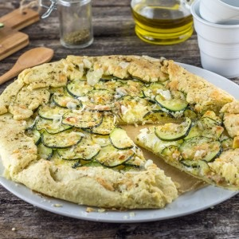

Tarte courgette ricotta

Aujourd’hui je vous retrouve avec une nouvelle recette! Je pense qu’en regardant les photos vous avez facilement deviné ce qui se cache dans ma nouvelle recette de tarte. C’est donc sans surprise qu’aujourd’hui je vous propose une recette de tarte courgette, ricotta et un peu de citron.
Les tartes c’est la solution idéale quand on n’a pas trop de temps (ou quand on a carrément la flemme) et c’est à coup sur une réussite car ce n’est pas bien compliqué. Je dois vous avouer qu’avant je ne faisais pas tant de tartes que ça mais c’est devenu maintenant quelque chose de courant depuis que je suis avec mon chéri. C’est vrai que chez ses parents, sa mère prépare souvent des tartes et comme je me régale à chaque fois je me suis dit que c’était en effet le bon compromis pour avoir un repas complet sans trop se prendre la tête.
Comme vous connaissez mon penchant pour le « bon et beau », vous comprenez pourquoi je suis raide dingue de cette présentation sous forme de tarte rustique. Je trouve le côté vintage magnifique et je sais pas (c’est surement très psychologique) mais j’ai l’impression que c’est encore meilleur quand c’est présenté de la sorte. Vous n’êtes évidemment pas obligés de me suivre pour la présentation mais je peux vous dire que ce n’est pas compliqué du tout et je dirai même que c’est encore plus simple qu’une tarte classique car vous n’avez même pas besoin de moule! D’ailleurs, si comme moi vous voulez faire votre pâte vous-même (on est d’accord que c’est mille fois meilleur), vous trouverez ma recette ICI.
Pour en revenir à ma tarte à la courgette je vous encourage à la réaliser très très vite car c’est bientôt la fin de la saison de la courgette (bon ok je sais c’est déjà la fin!) sinon vous la réaliserez l’année prochaine. A part quelques courgettes, il ne vous faudra pas grand chose de plus pour réaliser cette recette. Un peu de ricotta, du citron, des pignons de pins, de l’ail, du parmesan, quelques petits ingrédients en plus et le tour est joué!
Si l’idée vous plaît, je vous laisse découvrir la recette plus bas! Belle journée à tous!
Gobelet et plat à tarte de chez Revol
Ingrédients
- Farine - 250g
- Beurre mou - 125g
- Oeuf - 1
- Eau - 1 càs
- Sel - 1 pincée
- Courgette - 1 ou 2 selon leurs tailles
- Ricotta - 250g
- Citron - Jus d'un demi citron
- Ail - 1 gousse
- Parmesan - 80g
- Zaatar (ou un peu de thym) - Quelques pincées
- Pignon de pin - Une poignée
- Huile d'olive
Instructions
- Si vous préparez la pâte vous même rdv ici
- Couper la (ou les) courgette en fines rondelles
- Les placer dans un grand récipient avec un peu de sel pour les faire dégorger (environ 30 minutes) Mélanger avec une cuillère en bois de temps en temps
- Pendant ce temps, dans un saladier, mélanger la ricotta avec la gousse d'ail et le jus de citron Pour le jus de citron je vous conseille d'y aller petit à petit et de goûter au fur et à mesure jusqu'à ce que vous soyez pleinement satisfaits (idem pour l'ail vous pouvez en rajouter davantage mais pour moi une gousse est suffisante)
- Ajouter la moitié du parmesan à ce mélange et mélanger
- Égoutter les courgettes à l'aide de papier absorbant
- Sortir la pâte du frigo déjà étalée si elle est faite maison sinon dérouler une pâte déjà prête
- Préchauffer le four à 180°
- Étaler le mélange à base de ricotta en laissant 3 cm sur les bords
- Recouvrir avec les rondelles de courgettes
- Rabattre les bords de la pâte sur les courgettes
- Saupoudrer de parmesan de thym ou de zaatar
- Enfourner à 180° pendant 35 minutes (je vous conseille de surveiller la cuisson au bout des 20 premières minutes car selon les fours le temps de cuisson peut varier).
- Arroser d'un filet d'huile d'olive à la sortie du four et parsemer de pignons de pin.
Les tips de la communauté
Tarte rustique et légère très appréciée. Saveurs simples mais gourmandes de ricotta citronnée. Facilité d'exécution et adaptabilité (aubergine, tomates) régulièrement validées. Succes confirmé auprès des testeurs.
Astuces
- Pâte sablée maison apporte vraiment un plus par rapport à pâte du commerce
- Faire dégourger les courgettes 30 min avant si possible
- Thym frais du balcon se marie parfaitement
- Mettre moins de parmesan pour version plus légère
- Technique 'rustique' pour bords libres: facile et jolie
Variantes suggérées
- Remplacer ricotta par brousse de brebis
- Utiliser mélange courgettes-aubergines
- Adapter avec tomates de producteur à la place
- Pâte briochée comme alternative à pâte tarte classique